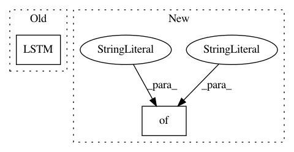

78197159b897391afd44862381694134bb8d049f,pyannote/audio/labeling/models.py,StackedLSTM,__call__,#StackedLSTM#Any#,63
Before Change
dropout_U=0.0)(x)
if self.bidirectional:
backward = LSTM(name="backward_{i:d}".format(i=i),
go_backwards=True,
output_dim=output_dim,
return_sequences=True,
activation="tanh",
dropout_W=0.0,
dropout_U=0.0)(x)
// concatenate forward and backward
if self.bidirectional:
x = merge([forward, backward], mode="concat", concat_axis=2)
After Change
n_lstm = len(self.lstm)
for i, output_dim in enumerate(self.lstm):
params = {
"name": "lstm_{i:d}".format(i=i),
"output_dim": output_dim,
"return_sequences": True,
"activation": "tanh"
}
// first LSTM needs to be given the input shape
if i == 0:
params["input_shape"] = input_shape
In pattern: SUPERPATTERN
Frequency: 3
Non-data size: 2
Instances
Project Name: pyannote/pyannote-audio
Commit Name: 78197159b897391afd44862381694134bb8d049f
Time: 2017-01-11
Author: bredin@limsi.fr
File Name: pyannote/audio/labeling/models.py
Class Name: StackedLSTM
Method Name: __call__
Project Name: deepmind/sonnet
Commit Name: a27371fc0adda5eb53ff5a29bf83d963f7e52096
Time: 2017-09-25
Author: noreply@google.com
File Name: sonnet/python/modules/gated_rnn_test.py
Class Name: LSTMTest
Method Name: testBatchNormInitializersCheck
Project Name: dmlc/dgl
Commit Name: 57f480f5916a98dd0ec4f90138a993f52dc2dc85
Time: 2018-07-12
Author: ivan.brugere@gmail.com
File Name: examples/pytorch/geniepath.py
Class Name: NodeUpdateModule
Method Name: forward